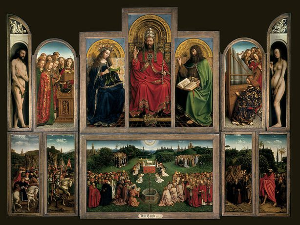

Jan van Eyck,1395 - 1441,Northern Renaissance,Flemish,"Jan van Eyck (Dutch: [ˈjɑn vɑn ˈɛik]) (before c. 1390 – 9 July 1441) was an Early Netherlandish painter active in Bruges. He is one of the founders of Early Netherlandish painting and one of the most significant representatives of Early Northern Renaissance art. The few surviving records of his early life indicate that he was born around 1380–1390, most likely in Maaseik. He took employment in the Hague around 1422, when he was already a master painter with workshop assistants, and employed as painter and valet de chambre with John III the Pitiless, ruler of Holland and Hainaut. He was then employed in Lille as court painter to Philip the Good, Duke of Burgundy after John's death in 1425, until he moved to Bruges in 1429 where he lived until his death. He was highly regarded by Philip and undertook a number of diplomatic visits abroad, including to Lisbon in 1428 to explore the possibility of a marriage contract between the duke and Isabella of Portugal.About 20 surviving paintings are confidently attributed to him, as well as the Ghent Altarpiece and the illuminated miniatures of the Turin-Milan Hours, all dated between 1432 and 1439. Ten are dated and signed with a variation of his motto ALS IK KAN (As I (Eyck) can), a pun on his name, which he typically painted in Greek characters.",http://en.wikipedia.org/wiki/Jan_van_Eyck,81
